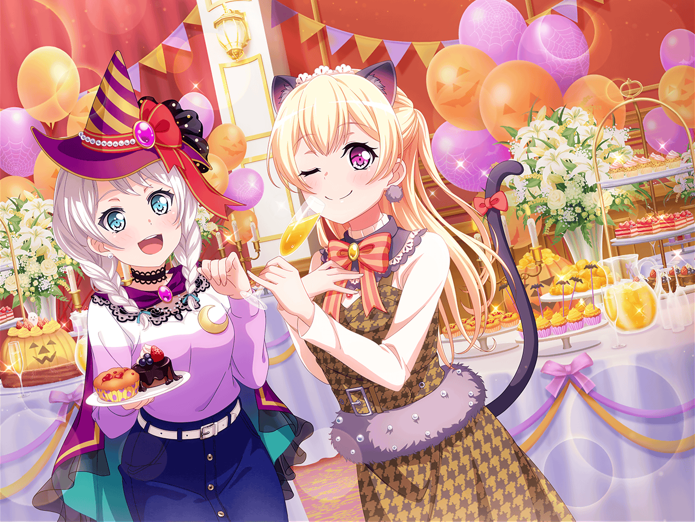

アイドル事務所
日菜
あはは！ いまのところもう１回巻き戻してー！
彩ちゃんが驚いた時って、ホントにいい顔するよねー
彩
もー日菜ちゃん！ 笑わないでよー！
あの時は扉が開かなくなって、本当に驚いたんだから！
イヴ
たしかにあの時は、本当に閉じ込められたのかと思って、
少し……怖かったですからね
千聖
そういう新鮮な反応は大切よ。
番組の企画に気づいたからといって、
わざとらしくなってしまっては良くないわ
千聖
とりあえずこのまま録画を一度通しで観ましょうか。
反省を次に活かせるよう、改善点を見つけていきましょう
日菜
んー？ はーい
麻弥
あ！ ここすごかったですよね！
日菜さんが、ささーっとジャック・オー・ランタンを
描いたところ！ 見事な手際でした
日菜
でしょでしょ！？
短い時間で描いた割には結構いい出来だったよね？
彩
うんうん！ ホントそう思うよ！
日菜ちゃんって、ホントに絵が上手だよね！
麻弥
ジブンは、図面をひくのは得意なんですが、
絵はなかなか上手く描けないんですよねー
彩
私も私も！
絵を描くときのコツって、なんかあるのかな？
日菜
コツ？ そうだなあ……
頭の中に浮かんだイメージをこう、シューってやって、
ぱーっと描けば大体こんな感じになるよ
彩
シューってやって、ぱー、かあ……
日菜ちゃんって感じだね、その答え
日菜
そうだ！ ね、今からお絵かき大会やろ！
あたしがお題出すから、みんなそれを描いてみて！
千聖
お、お絵かき大会……！？
日菜
審査員はあたし！
千聖
日菜ちゃん、今は録画した番組を見て
ロケを振り返るのが本来の目的なのよ？
日菜
えー？
それじゃあ、ちょっとだけ休憩にしよー
イヴ
チサトさん、息抜きです！ やりましょうっ！
千聖
わ、わかったわ……日菜ちゃん、あまり難しい
お題にしないでね
日菜
最初のお題はー……うん、決めた！
ジャック・オー・ランタン！
麻弥
先日のロケでずっとジャック・オー・ランタンを
見ていましたからね。ジブンでも描けそうです！
彩
よーっし、負けないからね〜！
千聖
（困ったわね……形は覚えているけれど、
それをイラストにするのはまた別の話なのよね……）
日菜
みんな描けた？ じゃあ、せーの！ で見せて！
日菜
せーのっ！
……ん？
千聖
……
日菜
千聖ちゃん、これなに？
千聖
お、お題の通りよ……
彩・イヴ・麻弥
……
彩
ちょ、ちょっとお題がむずかしすぎたかなあ〜。
私もうまく描けなかったし！ 日菜ちゃん、もうちょっと
簡単なお題出してよ〜！
日菜
えー、そう？ 彩ちゃんとかけっこういい感じに描けて……
彩
わ、私の絵はいいからさ！
じゃあ、次のお題お願いっ！
日菜
んー……じゃあ、おばけ！
これなら簡単でしょ？
千聖
そうね、簡単ね……
日菜
じゃあもう１回、せーの！ でいくよ〜？
日菜
せーのっ！！
彩・イヴ・麻弥
！！？
日菜
千聖ちゃんの描いたおばけ、めっちゃすごい！
ね、みんな見て！！ なんかすごいよ！ リアル！
イヴ
ちょ、ちょっと怖いです……！
麻弥
ふ、雰囲気があって味のあるイラストですね！
千聖
え、ええ……ありがとう……
日菜
あっはは！ これ、すごいよ！
えっと、これが目？ で、これが手かな？
どうなってるの？
千聖
日菜ちゃんお願い、これ以上はもうやめましょう
彩
そ、そうだね。そろそろ休憩おしまいにして、
また録画見返そうよ！
日菜
このとんがってるのは角？ んー、これが手にも見えるなあ。
千聖ちゃん、教えて〜！
千聖
ダメよ。さあ、録画を見返すわよ。
ほら日菜ちゃん、はじめるわよ！